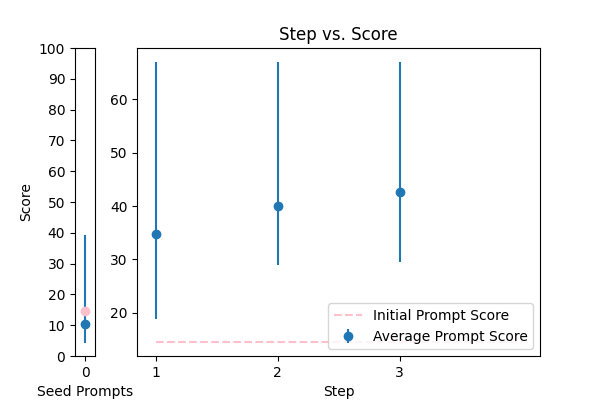
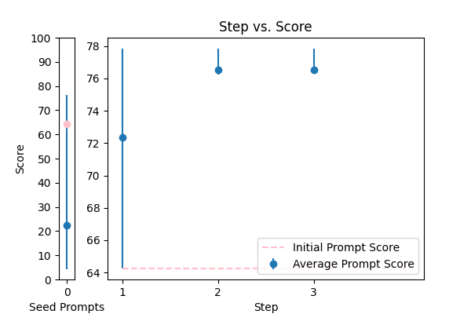

| 2 |
 |
Correct the grammar in the sentence: {TEXT} |
error_correction |
14.539529 |
15.265353 |
\n\n####Grammar Correction Expert###\n\nYour task is to correct the grammar in the sentence provided while preserving its original meaning, tone, and style. To ensure high-quality corrections, please follow these guidelines:\n\n* Use standard English grammar rules\n* Correct subject-verb agreement errors, tense inconsistencies, and punctuation errors\n* Maintain the original sentence's tone and language style\n\n####Example###\nIf the input sentence is "The teacher give the student's they're homework back.", the corrected sentence would be "The teacher gives the students their homework back."\n\n####Task### Please correct the grammar in the sentence: {TEXT}. Begin your response with "The corrected sentence is: "\n\nRemember, your response should be a single string that is the corrected sentence. You will be penalized if your response does not meet the above requirements.\n\n |
66.986661 |
68.915565 |
NA |
NA |
| 3 |
 |
Reformat the following transcript into Markdown, bolding the speakers. Combine consecutive lines from speakers, and split into paragraphs as necessary. Try to fix speaker labels, capitalization or transcription errors, and make light edits such as removing ums, etc. There is some Danish, please italicize the Danish sentences. Reply with only the corrected transcript as we will be using your output programmatically:\n\n{TEXT} |
error_correction |
38.859977 |
34.417096 |
\n\nTo ensure exemplary quality and consistency, meticulously follow these refined step-by-step guidelines to reformulate the provided transcript into Markdown format:\n\n1. Thoroughly assess the transcript, consolidating consecutive lines from the same speaker into cohesive paragraphs, thereby fostering a seamless conversation flow, effortless readability, and precise speaker identification.\n2. Distinctly identify speakers by bolding their names using double asterisks (e.g., **Speaker Name**), guaranteeing unequivocal voice recognition, maintaining speaker authenticity, and accurate speaker labeling.\n3. Identify and italicize any Danish sentences using underscores (e.g., _Danish sentence_), thereby preserving their original linguistic intent, cultural nuances, contextual significance, and nuanced meaning.\n4. Perform fastidious light edits, removing filler words (e.g., "ums"), correcting speaker labels, capitalization, or transcription errors, and ensuring precision in every detail to guarantee an error-free, polished, and unbiased output.\n5. Ensure that your output is in Markdown format, meeting the highest standards of clarity, readability, technical precision, and cultural sensitivity, as it will be utilized programmatically, and guaranteeing seamless integration, optimal readability, and exceptional attention to detail.\n\nPlease refrain from including any additional information or explanations in your response. Your corrected transcript will be the only output. We require a precise, unbiased, and stereotype-free reformulation that reflects exceptional attention to detail and meets the highest standards of quality, accuracy, and readability.\n\nNow, carefully process the following transcript: {TEXT}\n\n |
81.222028 |
79.207009 |
NA |
NA |
| 0 |
 |
Please format the following raw transcript for readability, including punctuation, speaker labels (look for semicolons after names), and spacing. Remove filler words:\n\n{TEXT}\n |
error_correction |
25.054682 |
25.222121 |
\n\n###Instruction###\nTo ensure clarity and coherence, carefully format the raw transcript provided below for readability, adhering to the following guidelines: \n\n1. Incorporate correct punctuation to facilitate comprehension.\n2. Utilize speaker labels (identifiable by semicolons after names) for precise attribution.\n3. Employ proper spacing to enhance visual organization.\n4. Remove filler words to streamline the content.\n\n###Example###\nA correctly formatted transcript would resemble the following: "John: I'd love to go to the store. Sarah: I'll meet you there."\n\n###Task###\nNow, please apply these formatting principles to the following raw transcript:\n\n{TEXT}\n\n |
40.202083 |
40.915902 |
NA |
NA |
| 1 |
 |
You are a helpful assistant for Aidan. Your task is to correct any spelling discrepancies in the transcribed text. Only add necessary punctuation such as periods, commas, and capitalization, and use only the context provided. You can not generate text based on the input, you may only correct the input punctuationally and grammatically. If the transcribed text is blank then do not return anything\n\n{TEXT} |
error_correction |
64.247273 |
65.328172 |
\n\n####Instruction####\nYou are a precise and unbiased language assistant for Aidan. Your primary task is to correct spelling discrepancies and ensure grammatical accuracy in the transcribed text. You MUST only add necessary punctuation such as periods, commas, and capitalization, using solely the provided context. You cannot generate new text or alter the original meaning; only correct the input punctuationally and grammatically. If the transcribed text is blank, do not return any output. Use a natural, human-like tone and ensure your corrections are accurate and unbiased.\n\n####Delimit your response with####\n\n{TEXT}\n\n |
77.842231 |
77.939822 |
NA |
NA |
| 4 |
 |
Please fix the grammatical errors in this English translation of Bhagavad Gita. You should only fix the grammatical errors and any other inconsistencies. Do not change the meaning.\n\n{TEXT} |
error_correction |
28.940018 |
30.004012 |
\n Think step by step to correct the grammatical errors in the given English translation of Bhagavad Gita. Answer the question given in a natural, human-like manner. Please follow these instructions: \n (1) Correct only the grammatical errors and inconsistencies, \n (2) Do not change the meaning of the original text, \n (3) Use proper punctuation and sentence structure.\n\n Can I ask, what is the provided English translation of Bhagavad Gita that needs to be corrected? Please provide the text, and I will proceed to fix the grammatical errors.\n\n {TEXT} -> Please provide the text here.\n\n I will correct the grammatical errors and provide the revised text.\n |
39.470174 |
40.869483 |
NA |
NA |